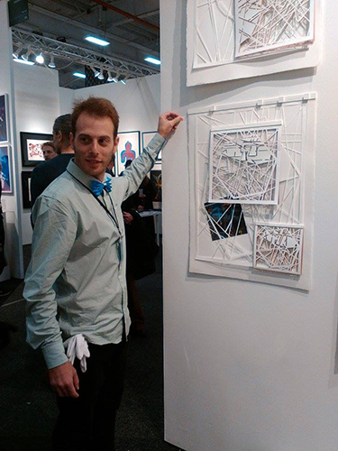
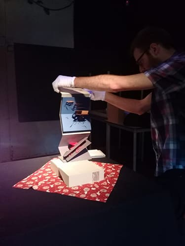

Curriculum Resumido

Escuela Hans Christian Andersen - sede Pacheco - 2019 - Presente
Dpt. Arte: Profesor de Artes Visuales en nivel Primario y Secundario
- Técnicas con papel: Pop-Up, Origami, Calados, Collage.
- Técnicas clásicas: dibujo, pintura, escultura.
- Teoría del Arte: Historia / Filosofía: Estética / Metodología de implementación
Dpto. de Comunicación:
- Desarrollo de contenido educativo
- Armado de exposiciones institucionales (material audiovisual, escenografía, cartelería)
- Gestión del Campus Institucional
- Gestión de Redes Sociales y sitio oficial
Universidad Nacional de San Martín - Profesor Adjunto - 2016 - Presente
en la materia “Títeres y Artes Visuales en nivel inicial” en la carrera virtual Licenciatura en nivel
inicial
- Creación y desarrollo del programa de estudio dictado en la misma materia.
Universidad Nacional de las Artes - Jefe de Trabajos Prácticos (2019 - Presente) - 2013 - Presente
- cátedra: “Ara Monti” - en la materia “Lenguaje Visual” (niveles I-VII) - carreras: Licenciatura y
Profesorado
- Previo Ayudante de primera (2015 - 2019) - Ayudante de segunda (2013-2015)
Exposiciones

- Feria Art on Paper en Pier 36 del 7 al 10 de marzo - Manhattan, New York, EE. UU. - 2019
- “PataBus” en el centro cultural EterClub, CABA, Argentina.- 2018
- Feria Art on Paper en Pier 36 del 8 al 11 de marzo - Manhattan, New York, EE. UU. - 2018
- Tokyo International Art Fair en Hikarie Hall, Shibuya, 26/27 de mayo - Tokio, Japón -2017
- Museo del libro y de la lengua de la Biblioteca Nacional Mariano Moreno - CABA, Argentina.- 2016
- Houston Fine Art Fair en NRG Center - Houston, Texas, Estados Unidos.- 2015
- Mapas Azarosas Migraciones en Galería Imaginario - Buenos Aires, Argentina.- 2015
- La Luz en la Sombra en la Galería Pasaje 17, CABA, Argentina.- 2015
- Proyecto Carmen en el Foro de las Ciencias y las Artes - Buenos Aires, Argentina